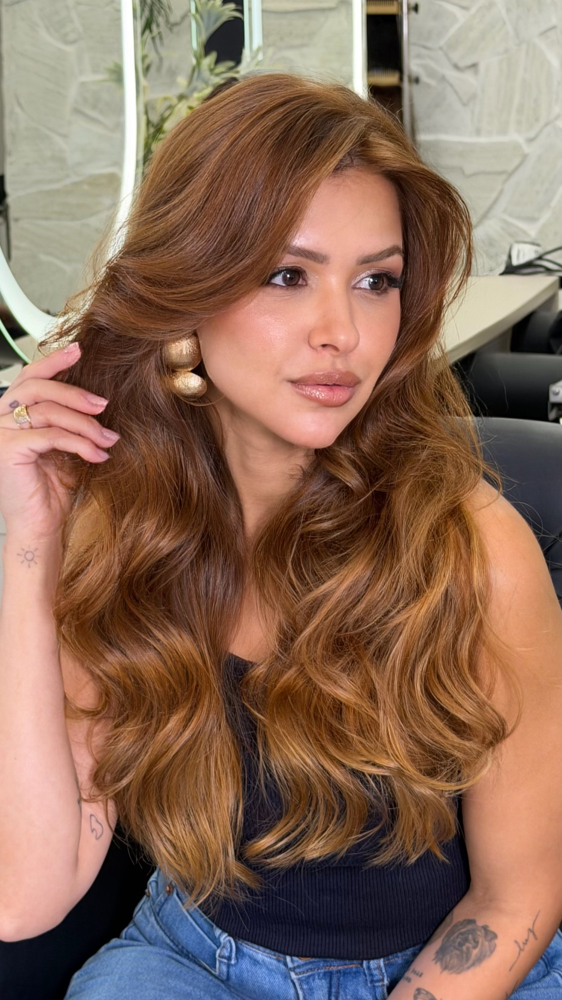
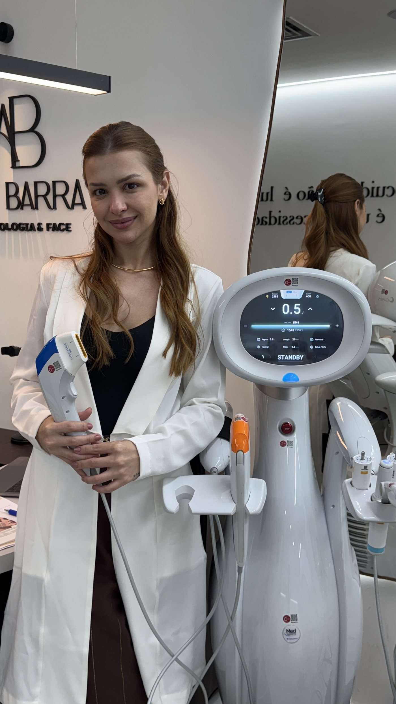
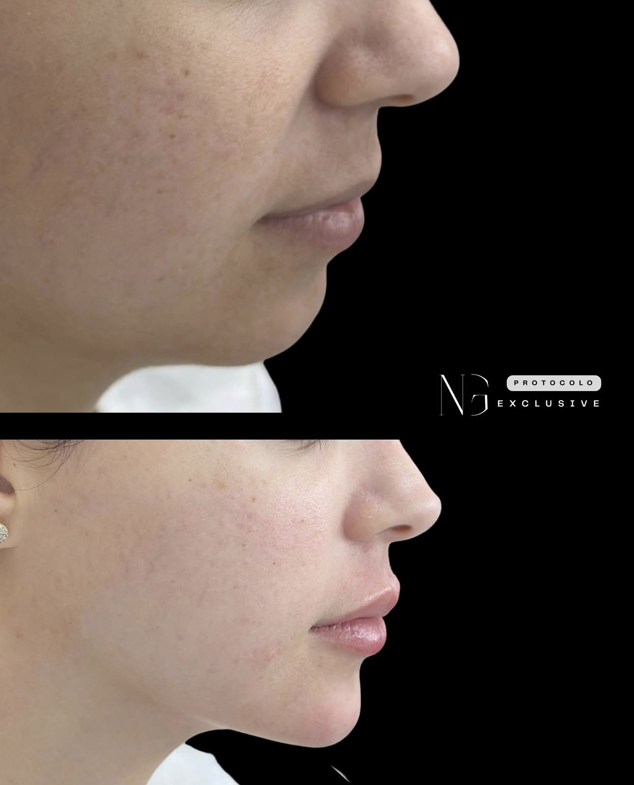
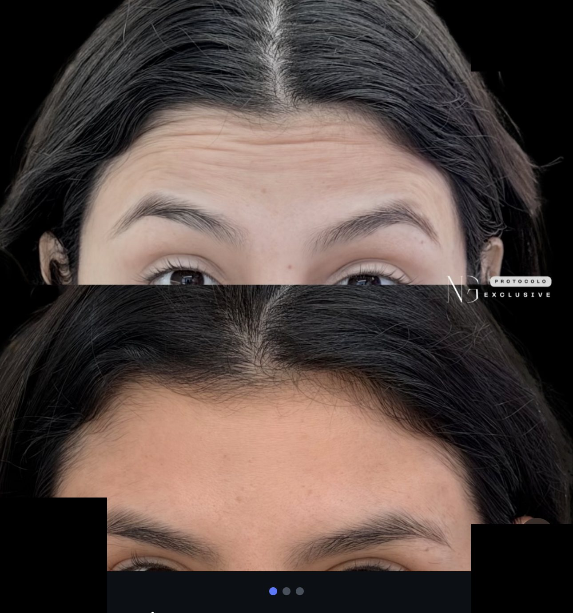
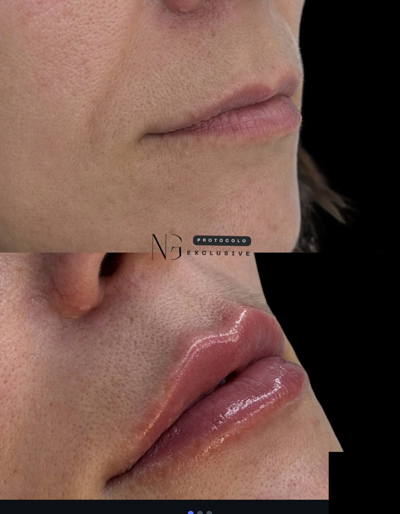
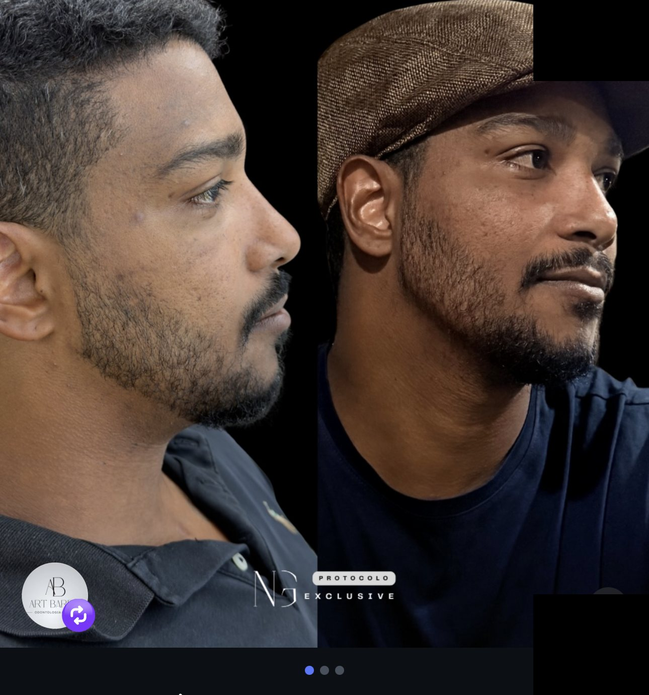
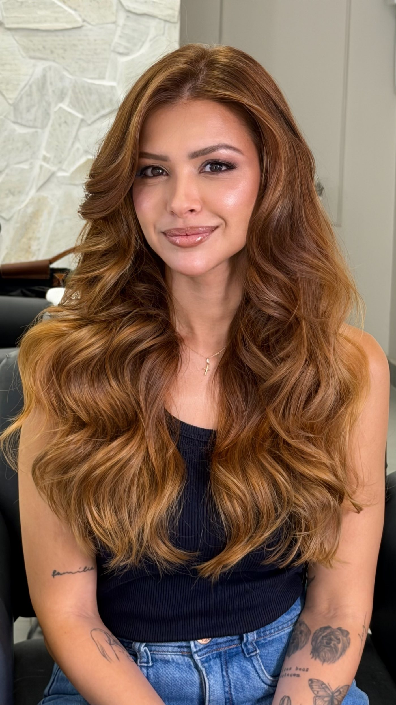

Diagnóstico facial detalhado
Fotos técnicas, análise de proporções e uma conversa sincera sobre o que incomoda e o que pode — ou não — ser resolvido com harmonização.

Harmonização Orofacial
Dra. Nathalia Gomes, cirurgiã-dentista especialista em Harmonização Orofacial. Atendimento em Barra da Tijuca e Itaguaí, RJ.
Avaliação
Nada de protocolo padronizado. Antes de qualquer procedimento, a Dra. Nathalia entende o que te incomoda no espelho e monta um plano para o seu rosto — não para um rosto genérico.
Conte o que você gostaria de melhorar e se prefere ser atendido(a) em Barra da Tijuca ou Itaguaí.
Análise facial detalhada e um plano de tratamento personalizado, explicado antes de qualquer procedimento.
Atendimento particular, com horários combinados diretamente pelo WhatsApp.
ou envie uma foto agora para uma pré-avaliação online ↓Pré-avaliação online
A Dra. Nathalia dá uma primeira olhada no seu caso a partir de fotos e te responde pelo WhatsApp ou e-mail com uma orientação inicial — sem custo, sem compromisso.

Sobre
A Dra. Nathalia Gomes é cirurgiã-dentista especialista em Harmonização Orofacial, com um protocolo próprio — o NG Exclusive — construído a partir da anatomia de cada rosto, e não de uma fórmula pronta.
Atende na Art Barra Odontologia & Face, em Barra da Tijuca, e também em Itaguaí. Seu trabalho já reuniu uma comunidade de quase 18 mil pessoas no Instagram, entre pacientes e outros profissionais que acompanham os casos e protocolos que ela documenta e compartilha. Atende também colegas dentistas interessados em se especializar na área.



Fotos técnicas, análise de proporções e uma conversa sincera sobre o que incomoda e o que pode — ou não — ser resolvido com harmonização.
Você sabe exatamente quais procedimentos serão feitos, por quê, e o resultado esperado — sem surpresa na hora da aplicação.
Procedimento realizado com técnica de anatomia facial e retorno combinado para avaliar o resultado e o pós.
Serviços
Procedimentos de harmonização orofacial, sempre dentro do plano individual de cada paciente.
Volume e contorno proporcionais ao restante do rosto, com técnica que preserva o movimento natural da boca.
Suaviza linhas de expressão em toda a face, mantendo a naturalidade dos movimentos — sem efeito "congelado".
Combinação de procedimentos planejada para equilibrar as proporções do rosto como um todo, não ponto a ponto.
Contorno de mandíbula e definição facial pensados para a estética masculina — mais ângulo, sem perder naturalidade.
Estímulo à produção natural de colágeno da pele, para firmeza e viço que aparecem de forma gradual.
Ultrassom microfocado para firmar a pele e melhorar o contorno do rosto, sem cortes e sem tempo de recuperação.
Mentoria individual para cirurgiões-dentistas que querem se especializar em Harmonização Orofacial.
No Instagram
Conteúdo real, gravado por ela para explicar o que faz sentido em cada fase da pele.
3 procedimentos indispensáveis para os 30+
Respondendo uma dúvida real, direto pelo áudio
Sobre os casos
Trechos publicados pela própria Dra. Nathalia junto dos registros de antes e depois.
Você já olhou no espelho e sentiu que seu rosto parecia cansado, mesmo estando bem?
Dra. Nathalia Gomes
sobre um caso de preenchimento labial
Mais do que suavizar linhas, o Botox é sobre naturalidade.
Dra. Nathalia Gomes
sobre um caso de Botox Full Face
Ela me procurou com uma queixa muito clara: um rosto com aparência infantil, sem definição.
Dra. Nathalia Gomes
sobre um caso de harmonização de perfil
Homens de alta performance entendem que aparência também é posicionamento.
Dra. Nathalia Gomes
sobre um caso de harmonização masculina
O objetivo nunca é mudar quem você é — é destacar o que já existe de melhor no seu rosto.
Protocolo próprio, baseado em anatomia facial e nas particularidades de cada paciente.
Antes de qualquer procedimento, você entende exatamente o que será feito e por quê.
Resultados
Arraste para o lado.

Fotos de procedimentos reais, publicadas com autorização das pacientes. Resultados variam de pessoa para pessoa, conforme anatomia e indicação clínica.

Avaliação individual
Marque sua avaliação agora — leva menos de um minuto pelo WhatsApp.
Agendar pelo WhatsAppAtendimento
Escolha o local mais perto de você — a confirmação de horário é sempre pelo WhatsApp.
Agende em 30 segundos
Preencha os campos: sua mensagem é copiada automaticamente e o WhatsApp abre pronto para você colar e enviar.